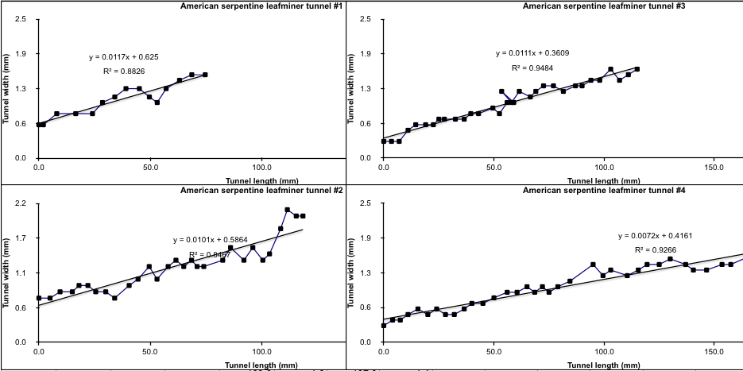

Math
Here I assemble some of my miscellaneous math projects in one place. I have included a leafminer study from ca. 2008, along with some explorations of number theory that are not directly related to the stem insect survey, but still investigate interesting patterns in nature broadly defined. This page also provides an opportunity to share a more detailed numerical analysis of the stem insect survey data, which I have not pursued yet as of this writing (September 2026).
On or around 2008, I measured the widths of four leaf mines at several places along their lengths. The identities of the insect and host plant are no longer known to me (if they ever were), but when reviewing the data in 2023, it jogged a memory that the measured leaves were from a tree. I haven't been able to find the original spreadsheet of numerical values, but the graphs survive, and I have included them here.
The mines were 0.3 to 0.6 mm in width where I first started measuring them at or near their beginnings, and they reached 1.4 to 1.9 mm in width where I stopped measuring them near their ends. The slopes of the regression lines varied from 0.0072 to 0.0117, with an average of 0.0100, indicating the larvae increased the width of their mines by about 100 μm (0.1 mm) for every 10 mm of lengthwise progress through the blade of the leaf. R2 values for the linear regressions ranged from 0.85 to 0.95 (rounded; average 0.90), so the width increases along the mine lengths were not entirely smooth, but still showed some consistency.

| # | Length of mine measured (mm) | # of points measured | Starting width (mm) | Ending width (mm) | Slope of linear regression line (mm width / mm length | R2 |
|---|---|---|---|---|---|---|
| 1 | 75 | 15 | 0.6 | 1.4 | 0.0117 | 0.8826 |
| 2 | 120 | 29 | 0.7 | 1.9 | 0.0101 | 0.8467 |
| 3 | 115 | 33 | 0.3 | 1.4 | 0.0111 | 0.9484 |
| 4 | >165 | >35 | 0.3 | ~1.7 | 0.0072 | 0.9266 |
In 2026 I began an informal study of this famous problem in number theory, which was proven by Wiles (1995) and Wiles and Taylor (1995). My project focused on writing the bases a, b, and c as the sums of smaller numbers, and exploring the resulting system. This theorem has already been very thoroughly explored by more skilled and knowledgeable researchers elsewhere. I still felt a pull to it, and decided to try to investigate it for my own.
At the beginning of the study, I constructed and shared a proof that turned out to be incorrect, which was embarrassing, but it did put me in good company among the many others whom a simple algebraic proof has eluded over the centuries. Despite the discouragement of that failure, I have continued to look into the system, though I'm not sure how long I will keep that up. It has been an engaging, fascinating, and thrilling challenge and a good chance to learn more about numbers, exponents, logarithms, and algebra generally. At times, it was also exhausting research that helped me understand my physical and mental limits when studying mathematics.
Here are some documents related to this undertaking:
- Some studies related to Fermat's Last Theorem (PDF; September 29, 2026) - provides a casual (but not yet completely vetted) proof of the minimum quantities of several major variables in the system and derives a number of equations or identities involving them.
I got curious about the relative contributions of primes and composites to the factors of integers, and investigated this relationship with some simple arithmetic and graphing. I tallied the number of factors contributed by each integer n in the range [1, x] to the factorization of itself and all the other integers in the range, then summed up the tallies for a given value of x and divided the result by the total number of factors contributed by the non-prime integers only in the same range. The result was a function G(x), which I nicknamed the "factor credit" function because it expresses the relative credit due to the composite numbers in contributing factors to the integers in the given range.
The following document provides more detail:
- Tracking the proportion of total factor count contributed by non-primes in a given range: a relative of the prime counting function? (PDF; July 15, 2026) - briefly describes and graphs G(x) and provides a list of values of the function for 1 ≤ x ≤ 3000.
- Wiles, A. 1995. Modular elliptic curves and Fermat's Last Theorem. Annals of Mathematics 141(3): 443-551. [return to in-text citation]
- Wiles, A. and R. Taylor. 1995. Ring-theoretic properties of certain Hecke algebras. Annals of Mathematics 141(3): 553-572. [return to in-text citation]
Page created: September 29, 2026. Last update: none